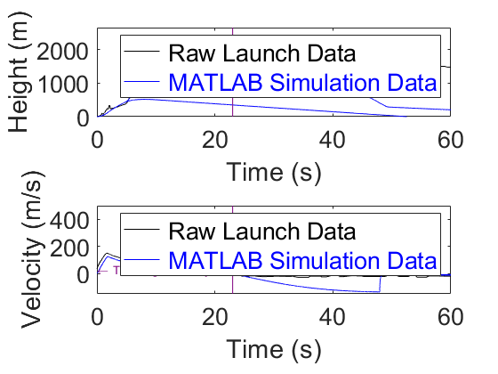
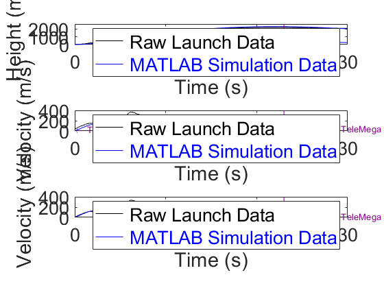

clear all;
close all;
L = 'linewidth';
D = 'displayname';
a = 0;
v = 0;
h = 0.5;
d = 0;
sf = 0;
pd = 0;
bd = 0;
tstart = 0;
dt = 0.01;
tstop = 180;
tseperation = 4.82;
height = [];
velocity = [];
acceleration = [];
drag = [];
sfd = [];
pressured = [];
based = [];
x = [];
for t = tstart:dt:tstop
height(end + 1) = h;
velocity(end + 1) = v;
acceleration(end + 1) = a;
drag(end + 1) = d;
sfd(end + 1) = sf;
pressured(end + 1) = pd;
based(end + 1) = bd;
x(end + 1) = t;
[a, d] = GetAcceleration(t,v,h);
v = v + dt*a ;
h = h + dt*v ;
if h < 0
break
end
end
h = height(482);
v = velocity(482);
a = acceleration(482);
height2 = [];
velocity2 = [];
acceleration2 = [];
drag2 = [];
sfd2 = [];
pressured2 = [];
based2 = [];
x2 = [];
for t = tseperation+dt:dt:tstop
height2(end + 1) = h;
velocity2(end + 1) = v;
acceleration2(end + 1) = a;
drag2(end + 1) = d;
sfd2(end + 1) = sf;
pressured2(end + 1) = pd;
based2(end + 1) = bd;
x2(end + 1) = t;
[a, d] = GetAcceleration2(v,h);
v = v + dt * a ;
h = h + dt * v ;
if h < 0
break
end
end
CompetitionRocket_OpenRocket_Sustainer = 'CR_OP_Sustainer.csv';
CompetitionRocket_OpenRocket_Booster = 'CR_OP_Booster.csv';
TimeOpenSust = xlsread(CompetitionRocket_OpenRocket_Sustainer,'A1:A5230');
TimeOpenBoost = xlsread(CompetitionRocket_OpenRocket_Booster,'A1:A838');
HeightOpenSust = xlsread(CompetitionRocket_OpenRocket_Sustainer,'B1:B5230');
HeightOpenBoost = xlsread(CompetitionRocket_OpenRocket_Booster,'B1:B838');
VelocityOpenSust = xlsread(CompetitionRocket_OpenRocket_Sustainer,'C1:C5230');
VelocityOpenBoost = xlsread(CompetitionRocket_OpenRocket_Booster,'C1:C838');
CompetitionRocket_Experimental = 'USRC_TeleMega_Flight_Data.csv';
TimeExperimental = xlsread(CompetitionRocket_Experimental,'E10:E688');
HeightExperimentalBoost = xlsread(CompetitionRocket_Experimental,'M10:M688');
VelocityExperimentalBoost = xlsread(CompetitionRocket_Experimental,'N10:N688');
figure(1)
plot(TimeExperimental,HeightExperimentalBoost,'k')
hold on
plot(x,height,'b')
plot(x2,height2,'b')
plot(TimeOpenSust,HeightOpenSust,'r')
plot(TimeOpenBoost,HeightOpenBoost,'r')
plot([22.5,22.5],[0,2650],'Color',[.5,0,.5])
plot([0,140],[2542,2542],'r')
plot([0,140],[2310,2310],'b')
plot([0,140],[2215,2215],'k')
text(23,1250,'APOGEE','Color',[.5,0,.5],'FontSize',12)
text(60,2593,'OpenRocket Apogee Prediction','Color','r','FontSize',12)
text(60,2360,'MATLAB Apogee Prediction','Color','b','FontSize',12)
text(60,2265,'Actual Experimental Apogee','Color','k','FontSize',12)
text(4.8,374,'\leftarrow Sustainer Ignition','Color',[.5,0,.5],'FontSize',10)
text(49.2,310,'\leftarrow Simulated Parachute Deployment','Color',[.5,0,.5],'FontSize',10)
text(67.92,1334,'\leftarrow Wrapped Parachute','Color',[.5,0,.5],'FontSize',10)
text(126,206.8,'Lake Landing','Color',[.5,0,.5],'FontSize',10)
text(82.2,60,'Simulated Landing','Color',[.5,0,.5],'FontSize',10)
xlabel('Time (s)','FontSize',22)
set(gca,'fontsize',20)
ylabel('Height (m)','FontSize',22)
set(gca,'fontsize',20)
lgd = legend('\color{black} Raw Launch Data','\color{blue} MATLAB Simulation Data','\color{red} OpenRocket Simulation Data');
lgd.FontSize = 20;
xlim([0,140])
ylim([0,2650])
figure(2)
plot(TimeExperimental,HeightExperimentalBoost,'k')
hold on
plot(x,height,'b')
plot(x2,height2,'b')
plot(TimeOpenSust,HeightOpenSust,'r')
plot(TimeOpenBoost,HeightOpenBoost,'r')
plot([22,22],[0,2650],'Color',[.5,0,.5])
plot([0,140],[2513,2513],'r')
plot([0,140],[2310,2310],'b')
plot([0,140],[2215,2215],'k')
text(23,1250,'APOGEE','Color',[.5,0,.5],'FontSize',12)
text(60,2563,'OpenRocket Apogee Prediction','Color','r','FontSize',12)
text(60,2360,'MATLAB Apogee Prediction','Color','b','FontSize',12)
text(60,2265,'Actual Experimental Apogee','Color','k','FontSize',12)
text(2.20,337,'Pressure Change from Booster Cutoff','Color',[.5,0,.5],'FontSize',10)
text(4.8,374,'\leftarrow Sustainer Ignition','Color',[.5,0,.5],'FontSize',12)
xlabel('Time (s)','FontSize',22)
set(gca,'fontsize',20)
ylabel('Height (m)','FontSize',22)
set(gca,'fontsize',20)
lgd = legend('\color{black} Raw Launch Data','\color{blue} MATLAB Simulation Data','\color{red} OpenRocket Simulation Data');
lgd.FontSize = 20;
xlim([0,10])
ylim([0,500])
figure(3)
plot(TimeExperimental,VelocityExperimentalBoost,'k')
hold on
plot(x,velocity,'r')
plot(x2,velocity2,'r')
plot(TimeOpenSust,VelocityOpenSust,'b')
plot(TimeOpenBoost,VelocityOpenBoost,'b')
plot([23,23],[-150,500],'Color',[.5,0,.5])
plot([0,60],[368,368],'k')
plot([0,60],[310,310],'b')
plot([0,60],[281,281],'r')
plot([6.2,6.2],[-150,500],'Color',[.5,0,.5])
text(23.2,200,'APOGEE','Color',[.5,0,.5],'FontSize',12)
text(12,376,'Actual Experimental MaxV','Color','k','FontSize',12)
text(12,318,'MATLAB MaxV Prediction','Color','b','FontSize',12)
text(12,289,'OpenRocket MaxV Prediction','Color','r','FontSize',12)
text(6.2,100,'MaxV','Color',[.5,0,.5],'FontSize',10)
text(23.6,57.64,'\leftarrow Common TeleMega Lag at Apogee','Color',[.5,0,.5],'FontSize',10)
text(49.1,-50,'\leftarrow Simulated Parachute Deployment','Color',[.5,0,.5],'FontSize',10)
text(42,-115,'Simulated Free-Falling','Color',[.5,0,.5],'FontSize',10)
xlabel('Time (s)','FontSize',22)
set(gca,'fontsize',20)
ylabel('Velocity (m/s)','FontSize',22)
set(gca,'fontsize',20)
lgd = legend('\color{black} Raw Launch Data','\color{blue} MATLAB Simulation Data','\color{red} OpenRocket Simulation Data');
lgd.FontSize = 20;
xlim([0,60])
ylim([-150,500])
figure(4)
subplot(2,1,2)
plot(TimeExperimental,VelocityExperimentalBoost,'k')
hold on
plot(TimeOpenSust,VelocityOpenSust,'b')
plot(TimeOpenBoost,VelocityOpenBoost,'b')
plot([23,23],[-150,500],'Color',[.5,0,.5])
text(23.2,200,'APOGEE','Color',[.5,0,.5],'FontSize',12)
text(23.6,57.64,'\leftarrow Common TeleMega Lag at Apogee','Color',[.5,0,.5],'FontSize',10)
text(0,35,'\leftarrow TeleMega Velocity Offset','Color',[.5,0,.5],'FontSize',10)
xlabel('Time (s)','FontSize',22)
set(gca,'fontsize',20)
ylabel('Velocity (m/s)','FontSize',22)
set(gca,'fontsize',20)
lgd = legend('\color{black} Raw Launch Data','\color{blue} MATLAB Simulation Data');
lgd.FontSize = 20;
xlim([0,60])
ylim([-150,500])
subplot(2,1,1)
plot(TimeExperimental,HeightExperimentalBoost,'k')
hold on
plot(x,height,'b')
plot(x2,height2,'b')
plot([23,23],[0,2650],'Color',[.5,0,.5])
text(23.2,1250,'APOGEE','Color',[.5,0,.5],'FontSize',12)
xlabel('Time (s)','FontSize',22)
set(gca,'fontsize',20)
ylabel('Height (m)','FontSize',22)
set(gca,'fontsize',20)
lgd = legend('\color{black} Raw Launch Data','\color{blue} MATLAB Simulation Data');
lgd.FontSize = 20;
xlim([0,60])
ylim([0,2650])
figure(5)
subplot(3,1,2)
plot(TimeExperimental,VelocityExperimentalBoost,'k')
hold on
plot(TimeOpenSust,VelocityOpenSust,'b')
plot(TimeOpenBoost,VelocityOpenBoost,'b')
plot([23,23],[-150,500],'Color',[.5,0,.5])
text(23.2,150,'APOGEE','Color',[.5,0,.5],'FontSize',12)
text(23.6,57.64,'\leftarrow Common TeleMega Lag at Apogee','Color',[.5,0,.5],'FontSize',10)
text(0,35,'\leftarrow TeleMega Velocity Offset','Color',[.5,0,.5],'FontSize',10)
text(4.8,100,'\leftarrow Sustainer Ignition','Color',[.5,0,.5],'FontSize',12)
xlabel('Time (s)','FontSize',22)
set(gca,'fontsize',20)
ylabel('Velocity (m/s)','FontSize',22)
set(gca,'fontsize',20)
lgd = legend('\color{black} Raw Launch Data','\color{blue} MATLAB Simulation Data');
lgd.FontSize = 20;
xlim([0,30])
ylim([0,400])
subplot(3,1,1)
plot(TimeExperimental,HeightExperimentalBoost,'k')
hold on
plot(x,height,'b')
plot(x2,height2,'b')
plot([23,23],[0,2650],'Color',[.5,0,.5])
text(23.2,850,'APOGEE','Color',[.5,0,.5],'FontSize',12)
text(4.8,374,'\leftarrow Sustainer Ignition','Color',[.5,0,.5],'FontSize',12)
xlabel('Time (s)','FontSize',22)
set(gca,'fontsize',20)
ylabel('Height (m)','FontSize',22)
set(gca,'fontsize',20)
lgd = legend('\color{black} Raw Launch Data','\color{blue} MATLAB Simulation Data');
lgd.FontSize = 20;
xlim([0,30])
ylim([0,2650])
subplot(3,1,3)
plot(TimeExperimental,VelocityExperimentalBoost-34.2,'k')
hold on
plot(TimeOpenSust,VelocityOpenSust,'b')
plot(TimeOpenBoost,VelocityOpenBoost,'b')
plot([23,23],[-150,500],'Color',[.5,0,.5])
text(23.2,150,'APOGEE','Color',[.5,0,.5],'FontSize',12)
text(23.6,23,'\leftarrow Common TeleMega Lag at Apogee','Color',[.5,0,.5],'FontSize',10)
text(4.8,100,'\leftarrow Sustainer Ignition','Color',[.5,0,.5],'FontSize',12)
xlabel('Time (s)','FontSize',22)
set(gca,'fontsize',20)
ylabel('Velocity (m/s)','FontSize',22)
set(gca,'fontsize',20)
lgd = legend('\color{black} Raw Launch Data','\color{blue} MATLAB Simulation Data');
lgd.FontSize = 20;
xlim([0,30])
ylim([0,400])


 